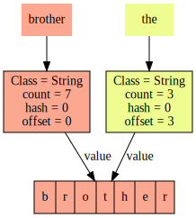
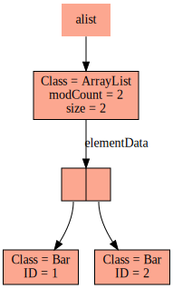
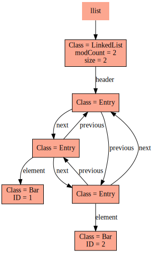
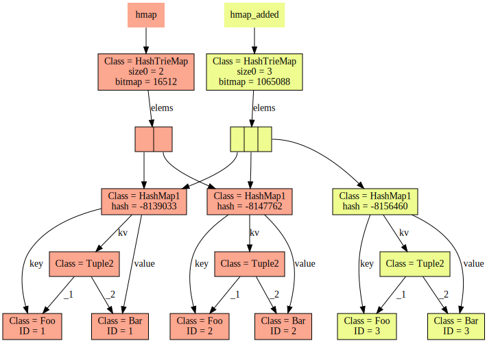
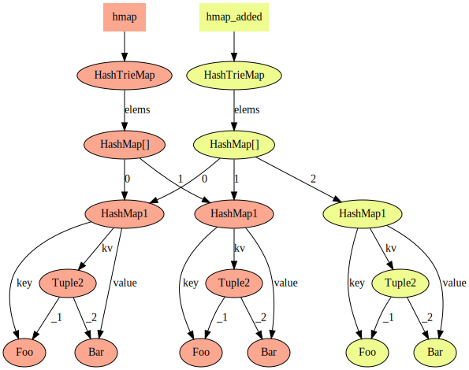

RegionViewer allows you to export a region (graph of objects on a JVM) to several different types of graph files. The most useful type of output graph file is GraphViz format. These files have a .dot extension. Using GraphViz tools,you can easily convert the dot file to many different formats, such as SVG.
RegionViewer uses some heuristics to decide what details to show and which to suppress. It is smart enough to detect and avoid loops. An example output looks like the following.
This above example shows the export from two Java Strings. The Strings were defined like this:
String brother = "brother";
String the = brother.substring(3, 6);
The RegionViewer was given the two object references, brother and the. It first followed all the objects reachable from brother and colored those nodes redish-orange, and then followed the objects reachable from the and colored those nodes yellowish. Any object previously visited was not exported a second time.
This example shows Java's immutable String objects exhibiting structural sharing. The code used to generate this graph is in the RegionViewer project in the file acceptanceTest/net/slreynolds/ds/SimplestExample.java. You can read and run this Java file to see how to use the RegionViewer. Here is the essential part of that code:
String brother = "brother";
String the = brother.substring(3, 6);
HashMap options = new HashMap();
options.put(ExporterOptions.OUTPUT_PATH, "simplest_strings.dot");
ObjectSaver gvizSaver = new ObjectSaver(new GraphVizExporter());
gvizSaver.save(new Object[]{brother,the},
new String[]{"brother","the"},
options);
System.out.printf("All done. Convert to SVG using GraphViz command \"dot -O -Tsvg simplest_strings.dot\".\n");
Some other examples are the following.
This above example shows the export from a Java ArrayList that contains two objects.
This above example shows the export from a Java ArrayList that contains two objects.
This above example shows the export from a Scala HashMap and a map derived from the orignal by adding a key/value. These last two Scala examples were generated by code in the ScalaRegionExamples project.
This above example shows the same scenario as above but using the simpler GraphViz exporter. This exporter suppresses all primitive fields and therefore only shows objects and their relationships.